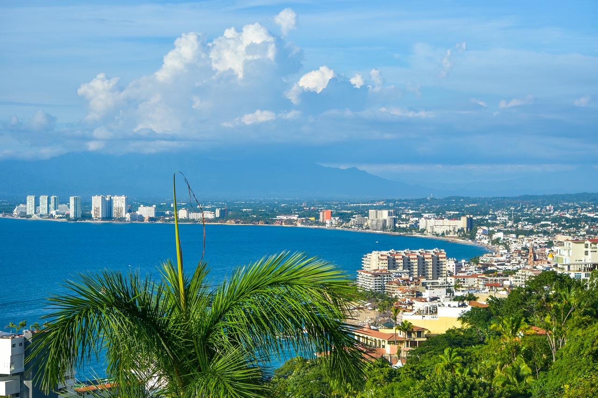
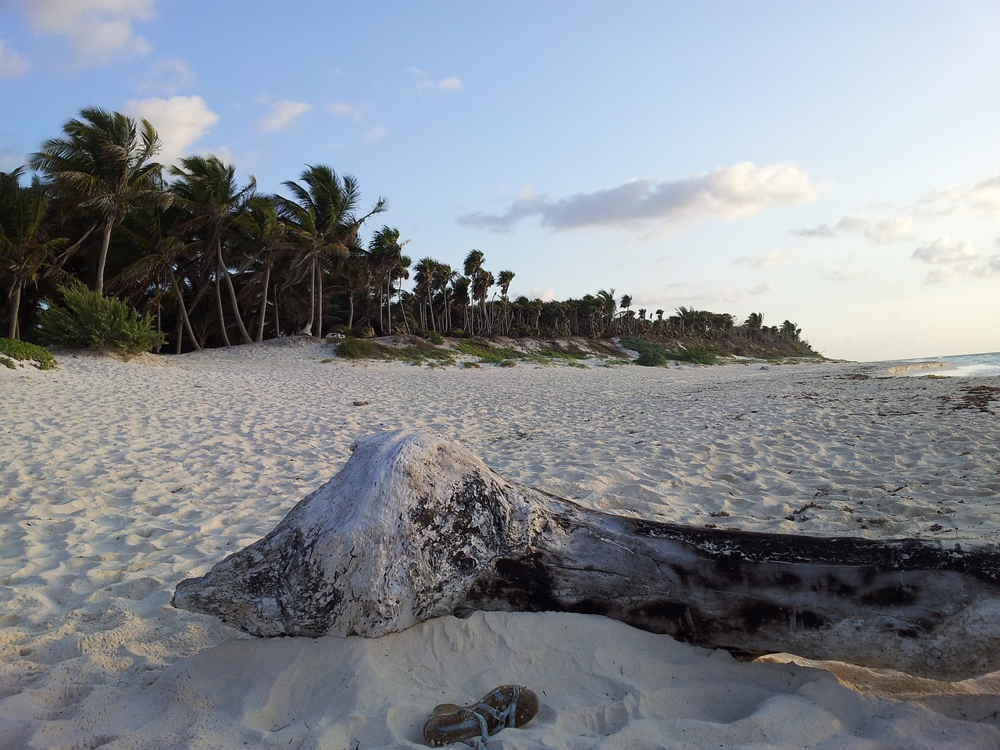
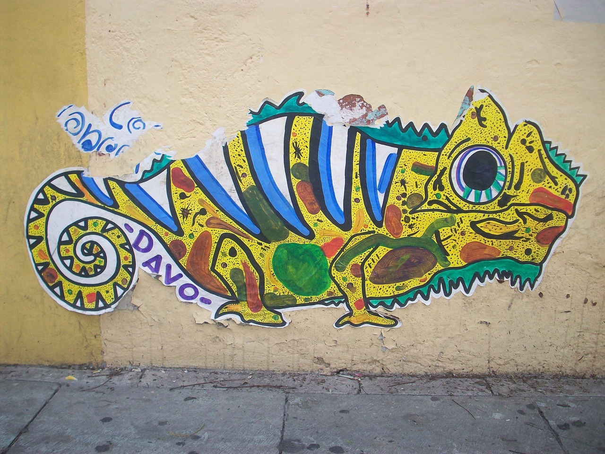

Why Mexico?
Mexico, a country of southern North America
Mexico is the fifth-largest country in the Americas and the 14th largest in the world. It is the 11th most populated country and the largest Spanish speaking country. Mexico is a federation comprising thirty-one states and a Federal District, the capital city.
Places to visit
in Mexico


